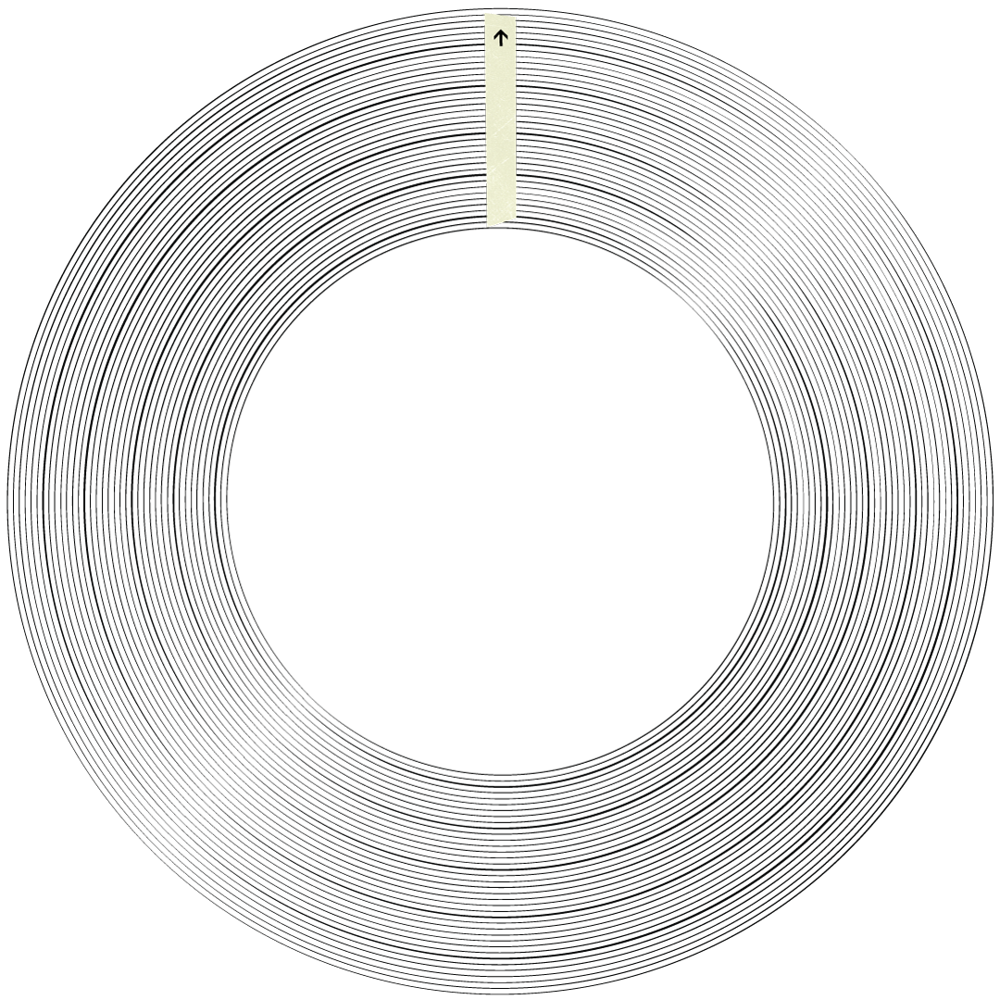

Throughout the design and research process, I act as a facilitator; I design with people. I need to understand important answers at very early stages of designing: “What people problems are we solving?” “How do we know these are the real problems?” and, “How will we know if we have solved these problems?” Using the Powers of Ten, I take a step back from the problem and look at the system around it -- or step closer and examine the problem in greater detail.
At a very early stage, I strive to create a more inclusive and more equitable process with both the team and stakeholders in the system. To know where to find any real insight toward my research and product development, I ask questions like: “Who needs to be in the room to solve this problem with me?” or, “Who are the stakeholders within this system that must be involved in order to get any real insight toward my research?”
Through my field research itself, I strive to balance being data-informed and data-driven through my thick data insights. At this stage, I aim to identify opportunities for value creation by identifying loopholes in the current system that we can leverage to create new interventions as potentially viable solutions.
After identifying leverage points, I begin developing the product for validation and testing, first as an MVPrototype and MVProduct. In this process, I focus on innovation first and visual design second. Upon a successful MVP phase, I allow room for emergence; the product becomes “a living product,” able to be iterated constantly through insights from user feedback loop to improve the product.